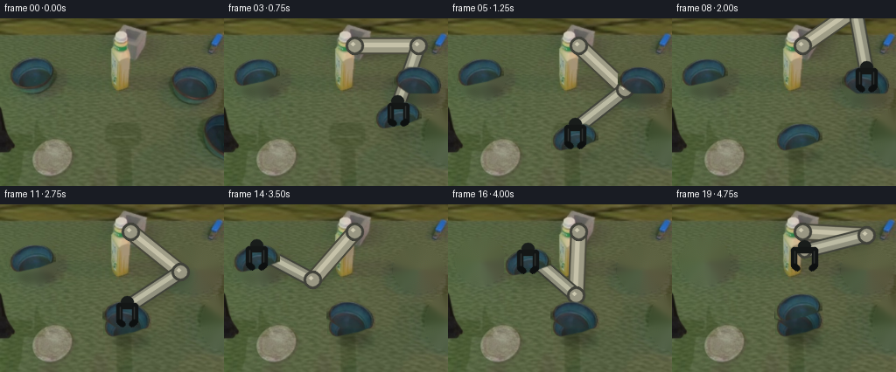
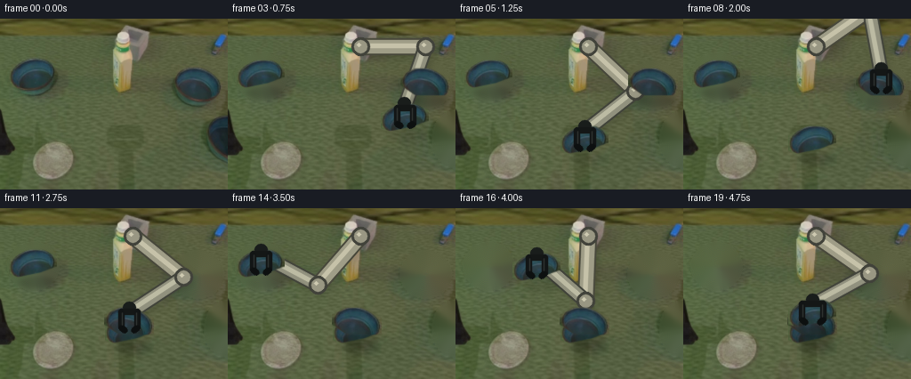
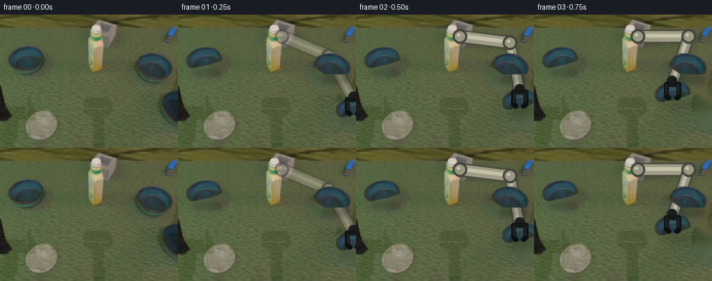
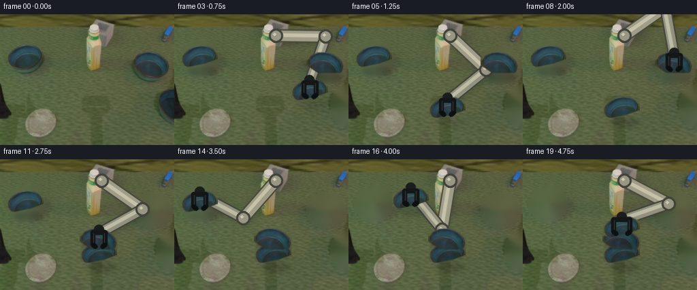
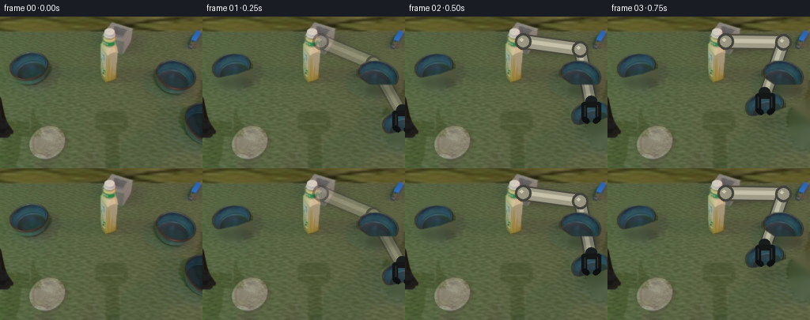

CODING AGENTS AS PIXEL WORLD MODELS
traex/GPT-5.6-Sol · common50_0046
点击播放 · 原生 RGB 像素
逐轮保存的候选
回放视频、检查图与代码变化。
每份候选均可单独播放。实际图片检查记录在下方工具轨迹中。
候选 01播放与检查图
点击播放 · 原生 RGB 像素

展开代码变化
--- 上一保存版本
+++ 本次保存版本
@@ -0,0 +1,207 @@
+from pathlib import Path
+import math
+import cv2
+import numpy as np
+from PIL import Image
+import artifact_io
+
+CASE = Path(__file__).resolve().parent
+H, W = 192, 256
+
+
+def smooth(t):
+ t = float(np.clip(t, 0.0, 1.0))
+ return t*t*(3.0-2.0*t)
+
+
+def extract_bowl(im, box):
+ """Extract a blue/teal object using color, then retain its solid silhouette."""
+ x0,y0,x1,y1 = box
+ c = im[y0:y1, x0:x1].copy()
+ r,g,b = [c[...,i].astype(np.int16) for i in range(3)]
+ seed = ((b-r > 15) & (b-g > 2) & (g-r > 4) & (b > 45)).astype(np.uint8)
+ seed = cv2.morphologyEx(seed, cv2.MORPH_CLOSE, np.ones((7,7),np.uint8), iterations=2)
+ n, labels, stats, _ = cv2.connectedComponentsWithStats(seed, 8)
+ if n > 1:
+ q = 1 + np.argmax(stats[1:, cv2.CC_STAT_AREA])
+ seed = (labels == q).astype(np.uint8)
+ # A convex hull captures dark rim and shaded wall pixels within the blue outline.
+ pts = cv2.findNonZero(seed)
+ hullmask = np.zeros(seed.shape, np.uint8)
+ if pts is not None:
+ cv2.fillConvexPoly(hullmask, cv2.convexHull(pts), 255, lineType=cv2.LINE_AA)
+ hullmask = cv2.dilate(hullmask, np.ones((3,3),np.uint8), iterations=1)
+ alpha = cv2.GaussianBlur(hullmask, (3,3), .55)
+ return c, alpha
+
+
+def paste_rgba(dst, rgb, alpha, center, scale=1.0):
+ if scale != 1.0:
+ nw=max(1,round(rgb.shape[1]*scale)); nh=max(1,round(rgb.shape[0]*scale))
+ rgb=cv2.resize(rgb,(nw,nh),interpolation=cv2.INTER_LINEAR)
+ alpha=cv2.resize(alpha,(nw,nh),interpolation=cv2.INTER_LINEAR)
+ hh,ww=alpha.shape
+ x0=int(round(center[0]-ww/2)); y0=int(round(center[1]-hh/2))
+ xa=max(0,x0); ya=max(0,y0); xb=min(W,x0+ww); yb=min(H,y0+hh)
+ if xa>=xb or ya>=yb: return
+ sx0=xa-x0; sy0=ya-y0; sx1=sx0+xb-xa; sy1=sy0+yb-ya
+ a=alpha[sy0:sy1,sx0:sx1,None].astype(np.float32)/255.0
+ d=dst[ya:yb,xa:xb].astype(np.float32)
+ s=rgb[sy0:sy1,sx0:sx1].astype(np.float32)
+ dst[ya:yb,xa:xb]=np.clip(d*(1-a)+s*a,0,255).astype(np.uint8)
+
+
+def ellipse_shadow(frame, center, scale=1.0, strength=.28):
+ # Shadows are composited, not flat black paint, preserving table texture.
+ layer=np.zeros((H,W),np.uint8)
+ c=(int(center[0]+4*scale),int(center[1]+18*scale))
+ cv2.ellipse(layer,c,(int(21*scale),int(7*scale)),0,0,360,130,-1,cv2.LINE_AA)
+ layer=cv2.GaussianBlur(layer,(0,0),3.0)
+ a=(layer.astype(np.float32)/255.0*strength)[...,None]
+ frame[:]=np.clip(frame.astype(np.float32)*(1-a),0,255).astype(np.uint8)
+
+
+def line_aa(img,p1,p2,color,width):
+ cv2.line(img,tuple(np.round(p1).astype(int)),tuple(np.round(p2).astype(int)),color,width,cv2.LINE_AA)
+
+
+def ik_elbow(anchor, target, L1=73., L2=73.):
+ ax,ay=anchor; tx,ty=target
+ dx,dy=tx-ax,ty-ay; d=max(1.,math.hypot(dx,dy)); dc=min(d,L1+L2-1)
+ a=(L1*L1-L2*L2+dc*dc)/(2*dc)
+ h=math.sqrt(max(0.,L1*L1-a*a))
+ ux,uy=dx/d,dy/d
+ # The upper/right elbow solution keeps the rigid links away from the stack.
+ side = -1.0
+ return (ax+ux*a + side*(-uy)*h, ay+uy*a + side*ux*h)
+
+
+def draw_arm(frame, wrist, grip_open=False, fade=1.0):
+ """Stable two-link rigid arm, with fixed-width links and revolute joints."""
+ if fade<=0: return
+ anchor=(149.,31.)
+ target=(float(wrist[0]),float(wrist[1]-13))
+ elbow=ik_elbow(anchor,target)
+ overlay=frame.copy()
+ # Soft cast shadow follows the rigid links.
+ sh=np.zeros((H,W),np.uint8)
+ line_aa(sh,(anchor[0]+4,anchor[1]+5),(elbow[0]+4,elbow[1]+5),105,15)
+ line_aa(sh,(elbow[0]+4,elbow[1]+5),(target[0]+4,target[1]+5),105,13)
+ sh=cv2.GaussianBlur(sh,(0,0),3.2)
+ a=(sh.astype(np.float32)/255*.24)[...,None]
+ overlay[:]=np.clip(overlay.astype(np.float32)*(1-a),0,255).astype(np.uint8)
+ # Dark metal boundaries, warm gray bodies, and a thin fixed highlight.
+ line_aa(overlay,anchor,elbow,(72,72,59),18)
+ line_aa(overlay,anchor,elbow,(159,157,135),14)
+ line_aa(overlay,(anchor[0]-1,anchor[1]-1),(elbow[0]-1,elbow[1]-1),(198,194,169),4)
+ line_aa(overlay,elbow,target,(65,67,58),16)
+ line_aa(overlay,elbow,target,(145,145,126),12)
+ line_aa(overlay,(elbow[0]-1,elbow[1]-1),(target[0]-1,target[1]-1),(188,187,163),3)
+ for p,rad in [(anchor,10),(elbow,10),(target,8)]:
+ cv2.circle(overlay,tuple(np.round(p).astype(int)),rad,(65,66,58),-1,cv2.LINE_AA)
+ cv2.circle(overlay,tuple(np.round(p).astype(int)),rad-3,(153,151,131),-1,cv2.LINE_AA)
+ cv2.circle(overlay,tuple(np.round((p[0]-2,p[1]-2)).astype(int)),2,(205,201,176),-1,cv2.LINE_AA)
+ if fade<1:
+ frame[:]=np.clip(frame.astype(np.float32)*(1-fade)+overlay.astype(np.float32)*fade,0,255).astype(np.uint8)
+ else: frame[:]=overlay
+
+
+def draw_gripper(frame, center, open_amount=0.0):
+ """Black parallel gripper surrounds the bowl without deforming it."""
+ x,y = center; y-=9
+ gap=18+6*open_amount
+ # wrist and crossbar
+ cv2.ellipse(frame,(round(x),round(y-10)),(7,6),0,0,360,(25,29,27),-1,cv2.LINE_AA)
+ line_aa(frame,(x-gap/2,y-5),(x+gap/2,y-5),(20,23,22),6)
+ # two fingers with small inward pads
+ for s in (-1,1):
+ xx=x+s*gap/2
+ line_aa(frame,(xx,y-5),(xx,y+13),(18,21,21),5)
+ line_aa(frame,(xx,y+13),(xx-s*4,y+16),(13,16,16),5)
+ line_aa(frame,(xx-s*.8,y-4),(xx-s*.8,y+10),(48,52,49),1)
+
+
+def arc(a,b,t,lift=18):
+ u=smooth(t)
+ return (a[0]+(b[0]-a[0])*u,
+ a[1]+(b[1]-a[1])*u-lift*math.sin(math.pi*u))
+
+
+def main():
+ src=np.asarray(Image.open(CASE/'first_frame.png').convert('RGB'),dtype=np.uint8)
+ # Two full visible instances supply real pixels for all identical bowls.
+ left_rgb,left_a=extract_bowl(src,(10,38,64,90))
+ right_rgb,right_a=extract_bowl(src,(194,50,250,99))
+
+ # Remove the three original bowl/gripper regions from a clean table plate.
+ removal=np.zeros((H,W),np.uint8)
+ cv2.ellipse(removal,(37,65),(29,27),0,0,360,255,-1)
+ cv2.ellipse(removal,(222,74),(29,27),0,0,360,255,-1)
+ # Initial held bowl and its black gripper are entering at lower right.
+ cv2.ellipse(removal,(252,135),(23,31),0,0,360,255,-1)
+ removal[:,254:]=np.maximum(removal[:,254:],0)
+ plate=cv2.inpaint(cv2.cvtColor(src,cv2.COLOR_RGB2BGR),removal,5,cv2.INPAINT_TELEA)
+ plate=cv2.cvtColor(plate,cv2.COLOR_BGR2RGB)
+
+ edge=(252.,136.); right=(222.,74.); left=(37.,65.)
+ base=(145.,139.); second=(145.,130.); top=(145.,121.)
+ frames=[]
+ for i in range(20):
+ if i==0:
+ frames.append(src.copy()); continue
+ f=plate.copy()
+ # Determine all bowls. Objects at rest use exactly fixed centers: no jitter.
+ bowls=[]
+ if i<=5:
+ p=arc(edge,base,(i-1)/4,24)
+ bowls.append(('left',p,1.0,'carry'))
+ else:
+ bowls.append(('left',base,1.0,'rest'))
+ if i<=7:
+ bowls.append(('right',right,1.0,'rest'))
+ elif i<=11:
+ bowls.append(('right',arc(right,second,(i-8)/3,22),1.0,'carry'))
+ else:
+ bowls.append(('right',second,1.0,'rest'))
+ if i<=13:
+ bowls.append(('left',left,1.0,'rest'))
+ elif i<=18:
+ bowls.append(('left',arc(left,top,(i-14)/4,24),1.0,'carry'))
+ else:
+ bowls.append(('left',top,1.0,'rest'))
+
+ # Gripper path: carry, release, reach next bowl, carry, repeat, retract.
+ gripping=False; openness=0.0
+ if i<=5:
+ wrist=bowls[0][1]; gripping=True
+ elif i<=7:
+ wrist=arc(base,right,(i-5)/2,31); openness=.65
+ elif i<=11:
+ moving=[q for q in bowls if q[3]=='carry']
+ wrist=moving[0][1]; gripping=True
+ elif i<=13:
+ wrist=arc(second,left,(i-11)/2,34); openness=.65
+ elif i<=18:
+ moving=[q for q in bowls if q[3]=='carry']
+ wrist=moving[0][1]; gripping=True
+ else:
+ wrist=arc(top,(151.,66.),1.0,12); openness=1.0
+
+ # Arm is behind the bowls; shadows under every bowl communicate contact/lift.
+ draw_arm(f,wrist,grip_open=not gripping,fade=min(1.,i/2))
+ # Stable order is bottom bowl first and highest/top bowl last.
+ order=sorted(bowls,key=lambda q:q[1][1],reverse=True)
+ for typ,p,sc,state in order:
+ ellipse_shadow(f,p,sc,.34 if state=='rest' else .18)
+ if typ=='right': paste_rgba(f,right_rgb,right_a,p,sc)
+ else: paste_rgba(f,left_rgb,left_a,p,sc)
+ draw_gripper(f,wrist,openness)
+ frames.append(f)
+
+ frames=np.stack(frames).astype(np.uint8)
+ assert frames.shape==(20,192,256,3)
+ assert np.array_equal(frames[0],src)
+ artifact_io.save(frames,CASE)
+
+if __name__=='__main__':
+ main()
候选 02播放与检查图
点击播放 · 原生 RGB 像素


展开代码变化
--- 上一保存版本
+++ 本次保存版本
@@ -185,7 +185,7 @@
moving=[q for q in bowls if q[3]=='carry']
wrist=moving[0][1]; gripping=True
else:
- wrist=arc(top,(151.,66.),1.0,12); openness=1.0
+ wrist=top; openness=1.0
# Arm is behind the bowls; shadows under every bowl communicate contact/lift.
draw_arm(f,wrist,grip_open=not gripping,fade=min(1.,i/2))
候选 03播放与检查图
点击播放 · 原生 RGB 像素


展开代码变化
--- 上一保存版本
+++ 本次保存版本
@@ -144,7 +144,7 @@
plate=cv2.cvtColor(plate,cv2.COLOR_BGR2RGB)
edge=(252.,136.); right=(222.,74.); left=(37.,65.)
- base=(145.,139.); second=(145.,130.); top=(145.,121.)
+ base=(145.,140.); second=(145.,121.); top=(145.,102.)
frames=[]
for i in range(20):
if i==0:
可观测工具轨迹
实际执行的命令与返回图片。
命令 1exit 0
/bin/bash -lc "cat prompt.txt && printf '\\n---RULES---\\n' && cat GENERATION_RULES.md"
命令 2exit 127
/bin/bash -lc "find . -maxdepth 2 -type f -printf '%p\\n' | sort && file first_frame.png"
命令 3exit 0
/bin/bash -lc "cat task_spec.json && sed -n '1,240p' artifact_io.py"
命令 4exit 0
/bin/bash -lc "python - <<'PY'
from PIL import Image
import numpy as np
im=np.array(Image.open('first_frame.png').convert('RGB'))
print(im.shape,im.dtype, im.min((0,1)), im.max((0,1)), im.mean((0,1)))
# list quantized common colors
q=(im//16)*16
u,c=np.unique(q.reshape(-1,3),axis=0,return_counts=True)
for i in np.argsort(c)[-30:][::-1]: print(tuple(u[i]),c[i])
PY"命令 5exit 2
/bin/bash -lc "cat > /tmp/analyze.py <<'PY'
from PIL import Image
import numpy as np
from collections import deque
im=np.array(Image.open('first_frame.png').convert('RGB')); h,w,_=im.shape
R,G,B=im.transpose(2,0,1)
# masks of likely elements
masks={
'blue':(B>G*1.10)&(B>R*1.25)&(B>55),
'teal':(B>R*1.18)&(G>R*1.1)&(G>45),
'black':(R<48)&(G<48)&(B<48),
'gray':(abs(R.astype(int)-G)<12)&(abs(G.astype(int)-B)<16)&(R>90),
'bright':(R>130)&(G>125)&(B>100),
'green':(G>R*1.06)&(G>B*1.15),
}
for name,m in masks.items():
ys,xs=np.where(m)
print('\\n',name,'n',len(xs),'bbox', (xs.min(),ys.min(),xs.max(),ys.max()) if len(xs) else None)
# components 8 conn manually cv2
import cv2
n,lab,stats,cents=cv2.connectedComponentsWithStats(m.astype('uint8'),8)
ids=np.argsort(stats[1:,4])[::-1][:15]+1
for i in ids:
x,y,ww,hh,a=stats[i];
if a>=5: print(' ',a,(x,y,ww,hh),tuple(np.round(cents[i],1)))
# rows blue ranges
for name in ['blue','teal','black','gray']:
m=masks[name]; print('\\nROWS',name)
for y in range(0,h,4):
xs=np.where(m[y:y+4].any(0))[0]
if len(xs):
# contiguous runs >=2
runs=[]
for z in np.split(xs,np.where(np.diff(xs)>1)[0]+1):
if len(z)>=2:runs.append((int(z[0]),int(z[-1])))
if runs: print(y,runs)
PY
python /tmp/analyze.py"命令 6exit 0
/bin/bash -lc "cat > .tmp/analyze.py <<'PY'
from PIL import Image
import numpy as np
im=np.array(Image.open('first_frame.png').convert('RGB')); h,w,_=im.shape
R,G,B=im.transpose(2,0,1)
masks={
'blue':(B>G*1.10)&(B>R*1.25)&(B>55),
'teal':(B>R*1.18)&(G>R*1.1)&(G>45),
'black':(R<48)&(G<48)&(B<48),
'gray':(abs(R.astype(int)-G)<12)&(abs(G.astype(int)-B)<16)&(R>90),
'bright':(R>130)&(G>125)&(B>100),
'green':(G>R*1.06)&(G>B*1.15),
}
for name,m in masks.items():
ys,xs=np.where(m)
print('\\n',name,'n',len(xs),'bbox', (xs.min(),ys.min(),xs.max(),ys.max()) if len(xs) else None)
import cv2
n,lab,stats,cents=cv2.connectedComponentsWithStats(m.astype('uint8'),8)
ids=np.argsort(stats[1:,4])[::-1][:15]+1
for i in ids:
x,y,ww,hh,a=stats[i];
if a>=5: print(' ',a,(x,y,ww,hh),tuple(np.round(cents[i],1)))
for name in ['blue','teal','black','gray']:
m=masks[name]; print('\\nROWS',name)
for y in range(0,h,4):
xs=np.where(m[y:y+4].any(0))[0]
if len(xs):
runs=[]
for z in np.split(xs,np.where(np.diff(xs)>1)[0]+1):
if len(z)>=2:runs.append((int(z[0]),int(z[-1])))
if runs: print(y,runs)
PY
python .tmp/analyze.py"命令 7exit 0
/bin/bash -lc "python - <<'PY'
from PIL import Image
import numpy as np
im=np.array(Image.open('first_frame.png').convert('RGB'))
# quantize cluster kmeans to print palette + map 4x4
from sklearn.cluster import KMeans
small=im.reshape(-1,3)[::4]
k=KMeans(14,random_state=1,n_init=5).fit(small)
c=k.cluster_centers_.round().astype(int)
# label sorted manually hue/light
for i,x in enumerate(c): print(i,x)
lab=k.predict(im[::4,::4].reshape(-1,3)).reshape(48,64)
chars='0123456789ABCD'
for row in lab: print(''.join(chars[i] for i in row))
PY"命令 8exit 0
/bin/bash -lc "cat > generate.py <<'PY'
from pathlib import Path
import math
import cv2
import numpy as np
from PIL import Image
import artifact_io
CASE = Path(__file__).resolve().parent
H, W = 192, 256
def smooth(t):
t = float(np.clip(t, 0.0, 1.0))
return t*t*(3.0-2.0*t)
def extract_bowl(im, box):
\"\"\"Extract a blue/teal object using color, then retain its solid silhouette.\"\"\"
x0,y0,x1,y1 = box
c = im[y0:y1, x0:x1].copy()
r,g,b = [c[...,i].astype(np.int16) for i in range(3)]
seed = ((b-r > 15) & (b-g > 2) & (g-r > 4) & (b > 45)).astype(np.uint8)
seed = cv2.morphologyEx(seed, cv2.MORPH_CLOSE, np.ones((7,7),np.uint8), iterations=2)
n, labels, stats, _ = cv2.connectedComponentsWithStats(seed, 8)
if n > 1:
q = 1 + np.argmax(stats[1:, cv2.CC_STAT_AREA])
seed = (labels == q).astype(np.uint8)
# A convex hull captures dark rim and shaded wall pixels within the blue outline.
pts = cv2.findNonZero(seed)
hullmask = np.zeros(seed.shape, np.uint8)
if pts is not None:
cv2.fillConvexPoly(hullmask, cv2.convexHull(pts), 255, lineType=cv2.LINE_AA)
hullmask = cv2.dilate(hullmask, np.ones((3,3),np.uint8), iterations=1)
alpha = cv2.GaussianBlur(hullmask, (3,3), .55)
return c, alpha
def paste_rgba(dst, rgb, alpha, center, scale=1.0):
if scale "'!= 1.0:
nw=max(1,round(rgb.shape[1]*scale)); nh=max(1,round(rgb.shape[0]*scale))
rgb=cv2.resize(rgb,(nw,nh),interpolation=cv2.INTER_LINEAR)
alpha=cv2.resize(alpha,(nw,nh),interpolation=cv2.INTER_LINEAR)
hh,ww=alpha.shape
x0=int(round(center[0]-ww/2)); y0=int(round(center[1]-hh/2))
xa=max(0,x0); ya=max(0,y0); xb=min(W,x0+ww); yb=min(H,y0+hh)
if xa>=xb or ya>=yb: return
sx0=xa-x0; sy0=ya-y0; sx1=sx0+xb-xa; sy1=sy0+yb-ya
a=alpha[sy0:sy1,sx0:sx1,None].astype(np.float32)/255.0
d=dst[ya:yb,xa:xb].astype(np.float32)
s=rgb[sy0:sy1,sx0:sx1].astype(np.float32)
dst[ya:yb,xa:xb]=np.clip(d*(1-a)+s*a,0,255).astype(np.uint8)
def ellipse_shadow(frame, center, scale=1.0, strength=.28):
# Shadows are composited, not flat black paint, preserving table texture.
layer=np.zeros((H,W),np.uint8)
c=(int(center[0]+4*scale),int(center[1]+18*scale))
cv2.ellipse(layer,c,(int(21*scale),int(7*scale)),0,0,360,130,-1,cv2.LINE_AA)
layer=cv2.GaussianBlur(layer,(0,0),3.0)
a=(layer.astype(np.float32)/255.0*strength)[...,None]
frame[:]=np.clip(frame.astype(np.float32)*(1-a),0,255).astype(np.uint8)
def line_aa(img,p1,p2,color,width):
cv2.line(img,tuple(np.round(p1).astype(int)),tuple(np.round(p2).astype(int)),color,width,cv2.LINE_AA)
def ik_elbow(anchor, target, L1=73., L2=73.):
ax,ay=anchor; tx,ty=target
dx,dy=tx-ax,ty-ay; d=max(1.,math.hypot(dx,dy)); dc=min(d,L1+L2-1)
a=(L1*L1-L2*L2+dc*dc)/(2*dc)
h=math.sqrt(max(0.,L1*L1-a*a))
ux,uy=dx/d,dy/d
# The upper/right elbow solution keeps the rigid links away from the stack.
side = -1.0
return (ax+ux*a + side*(-uy)*h, ay+uy*a + side*ux*h)
def draw_arm(frame, wrist, grip_open=False, fade=1.0):
"""Stable two-link rigid arm, with fixed-width links and revolute joints."""
if fade<=0: return
anchor=(149.,31.)
target=(float(wrist[0]),float(wrist[1]-13))
elbow=ik_elbow(anchor,target)
overlay=frame.copy()
# Soft cast shadow follows the rigid links.
sh=np.zeros((H,W),np.uint8)
line_aa(sh,(anchor[0]+4,anchor[1]+5),(elbow[0]+4,elbow[1]+5),105,15)
line_aa(sh,(elbow[0]+4,elbow[1]+5),(target[0]+4,target[1]+5),105,13)
sh=cv2.GaussianBlur(sh,(0,0),3.2)
a=(sh.astype(np.float32)/255*.24)[...,None]
overlay[:]=np.clip(overlay.astype(np.float32)*(1-a),0,255).astype(np.uint8)
# Dark metal boundaries, warm gray bodies, and a thin fixed highlight.
line_aa(overlay,anchor,elbow,(72,72,59),18)
line_aa(overlay,anchor,elbow,(159,157,135),14)
line_aa(overlay,(anchor[0]-1,anchor[1]-1),(elbow[0]-1,elbow[1]-1),(198,194,169),4)
line_aa(overlay,elbow,target,(65,67,58),16)
line_aa(overlay,elbow,target,(145,145,126),12)
line_aa(overlay,(elbow[0]-1,elbow[1]-1),(target[0]-1,target[1]-1),(188,187,163),3)
for p,rad in [(anchor,10),(elbow,10),(target,8)]:
cv2.circle(overlay,tuple(np.round(p).astype(int)),rad,(65,66,58),-1,cv2.LINE_AA)
cv2.circle(overlay,tuple(np.round(p).astype(int)),rad-3,(153,151,131),-1,cv2.LINE_AA)
cv2.circle(overlay,tuple(np.round((p[0]-2,p[1]-2)).astype(int)),2,(205,201,176),-1,cv2.LINE_AA)
if fade<1:
frame[:]=np.clip(frame.astype(np.float32)*(1-fade)+overlay.astype(np.float32)*fade,0,255).astype(np.uint8)
else: frame[:]=overlay
def draw_gripper(frame, center, open_amount=0.0):
"""Black parallel gripper surrounds the bowl without deforming it."""
x,y = center; y-=9
gap=18+6*open_amount
# wrist and crossbar
cv2.ellipse(frame,(round(x),round(y-10)),(7,6),0,0,360,(25,29,27),-1,cv2.LINE_AA)
line_aa(frame,(x-gap/2,y-5),(x+gap/2,y-5),(20,23,22),6)
# two fingers with small inward pads
for s in (-1,1):
xx=x+s*gap/2
line_aa(frame,(xx,y-5),(xx,y+13),(18,21,21),5)
line_aa(frame,(xx,y+13),(xx-s*4,y+16),(13,16,16),5)
line_aa(frame,(xx-s*.8,y-4),(xx-s*.8,y+10),(48,52,49),1)
def arc(a,b,t,lift=18):
u=smooth(t)
return (a[0]+(b[0]-a[0])*u,
a[1]+(b[1]-a[1])*u-lift*math.sin(math.pi*u))
def main():
src=np.asarray(Image.open(CASE/'"'first_frame.png').convert('RGB'),dtype=np.uint8)
# Two full visible instances supply real pixels for all identical bowls.
left_rgb,left_a=extract_bowl(src,(10,38,64,90))
right_rgb,right_a=extract_bowl(src,(194,50,250,99))
# Remove the three original bowl/gripper regions from a clean table plate.
removal=np.zeros((H,W),np.uint8)
cv2.ellipse(removal,(37,65),(29,27),0,0,360,255,-1)
cv2.ellipse(removal,(222,74),(29,27),0,0,360,255,-1)
# Initial held bowl and its black gripper are entering at lower right.
cv2.ellipse(removal,(252,135),(23,31),0,0,360,255,-1)
removal[:,254:]=np.maximum(removal[:,254:],0)
plate=cv2.inpaint(cv2.cvtColor(src,cv2.COLOR_RGB2BGR),removal,5,cv2.INPAINT_TELEA)
plate=cv2.cvtColor(plate,cv2.COLOR_BGR2RGB)
edge=(252.,136.); right=(222.,74.); left=(37.,65.)
base=(145.,139.); second=(145.,130.); top=(145.,121.)
frames=[]
for i in range(20):
if i==0:
frames.append(src.copy()); continue
f=plate.copy()
# Determine all bowls. Objects at rest use exactly fixed centers: no jitter.
bowls=[]
if i<=5:
p=arc(edge,base,(i-1)/4,24)
bowls.append(('left',p,1.0,'carry'))
else:
bowls.append(('left',base,1.0,'rest'))
if i<=7:
bowls.append(('right',right,1.0,'rest'))
elif i<=11:
bowls.append(('right',arc(right,second,(i-8)/3,22),1.0,'carry'))
else:
bowls.append(('right',second,1.0,'rest'))
if i<=13:
bowls.append(('left',left,1.0,'rest'))
elif i<=18:
bowls.append(('left',arc(left,top,(i-14)/4,24),1.0,'carry'))
else:
bowls.append(('left',top,1.0,'rest'))
# Gripper path: carry, release, reach next bowl, carry, repeat, retract.
gripping=False; openness=0.0
if i<=5:
wrist=bowls[0][1]; gripping=True
elif i<=7:
wrist=arc(base,right,(i-5)/2,31); openness=.65
elif i<=11:
moving=[q for q in bowls if q[3]=='carry']
wrist=moving[0][1]; gripping=True
elif i<=13:
wrist=arc(second,left,(i-11)/2,34); openness=.65
elif i<=18:
moving=[q for q in bowls if q[3]=='carry']
wrist=moving[0][1]; gripping=True
else:
wrist=arc(top,(151.,66.),1.0,12); openness=1.0
# Arm is behind the bowls; shadows under every bowl communicate contact/lift.
draw_arm(f,wrist,grip_open=not gripping,fade=min(1.,i/2))
# Stable order is bottom bowl first and highest/top bowl last.
order=sorted(bowls,key=lambda q:q[1][1],reverse=True)
for typ,p,sc,state in order:
ellipse_shadow(f,p,sc,.34 if state=='rest' else .18)
if typ=='right': paste_rgba(f,right_rgb,right_a,p,sc)
else: paste_rgba(f,left_rgb,left_a,p,sc)
draw_gripper(f,wrist,openness)
frames.append(f)
frames=np.stack(frames).astype(np.uint8)
assert frames.shape==(20,192,256,3)
assert np.array_equal(frames[0],src)
artifact_io.save(frames,CASE)
if __name__=='__main__':
main()
PY
python generate.py
python - <<'PY'
import numpy as np
from PIL import Image
z=np.load('pixels.npz')['pixels']
print(z.shape,z.dtype)
a=np.array(Image.open('first_frame.png').convert('RGB')).astype(np.uint32)
p=(a[:,:,0]<<16)|(a[:,:,1]<<8)|a[:,:,2]
print('frame0 exact',np.array_equal(z[:,:,0],p))
for i in range(1,20):
prev=z[:,:,i-1]; cur=z[:,:,i]
print(i, np.count_nonzero(cur"'!=prev), float(np.abs((cur&255).astype(int)-(prev&255).astype(int)).mean()))
PY'命令 9exit 0
/bin/bash -lc "python - <<'PY'
p='generate.py'
s=open(p).read()
s=s.replace(\"wrist=arc(top,(151.,66.),1.0,12); openness=1.0\", \"wrist=top; openness=1.0\")
open(p,'w').write(s)
PY
python generate.py
python - <<'PY'
from PIL import Image
import numpy as np, os
fs=[np.array(Image.open(f'frames/{i:02d}.png')) for i in range(20)]
print('shape/dtype',np.stack(fs).shape,np.stack(fs).dtype)
print('first exact',np.array_equal(fs[0],np.array(Image.open('first_frame.png').convert('RGB'))))
print('outputs',[(p,os.path.getsize(p)) for p in ['pixels.npz','inspection.png','transition_check.png','index.html']])
# blue/teal pixel centroids for representative output states
for i in [0,1,5,6,9,11,12,15,18,19]:
a=fs[i];r,g,b=np.moveaxis(a,2,0).astype(int);m=(b-r>18)&(b-g>4)&(g-r>5)&(b>50)
# x/y components
n,lab,st,cen=cv2.connectedComponentsWithStats(m.astype('uint8'),8) if False else (None,None,None,None)
y,x=np.where(m)
print(i,'teal n',len(x),'centroid',tuple(np.round([x.mean(),y.mean()],1)))
PY"命令 10exit 0
/bin/bash -lc "python - <<'PY'
p='generate.py'; s=open(p).read(); s=s.replace(\"base=(145.,139.); second=(145.,130.); top=(145.,121.)\", \"base=(145.,140.); second=(145.,121.); top=(145.,102.)\"); open(p,'w').write(s)
PY
python generate.py
python -m py_compile generate.py
python - <<'PY'
import numpy as np
from PIL import Image
f=np.stack([np.array(Image.open(f'frames/{i:02d}.png').convert('RGB')) for i in range(20)])
s=np.array(Image.open('first_frame.png').convert('RGB'))
assert f.shape==(20,192,256,3) and f.dtype==np.uint8 and np.array_equal(f[0],s)
# Count exact frame duplication and per-frame changed pixels.
print('validated:',f.shape,'first_exact=',np.array_equal(f[0],s))
print('adjacent changed pixels:',[int(np.any(f[i]"'!=f[i-1],2).sum()) for i in range(1,20)])
print('"'final dynamic range:',f[-1].min(),f[-1].max(), 'mean',np.round(f[-1].mean((0,1)),2))
PY
ls -lh generate.py pixels.npz inspection.png index.html frames/00.png frames/19.png"保存候选 3 份；完成命令 10 次；可验证图片返回 0 张。原始 API 响应与完整日志保留在本地。